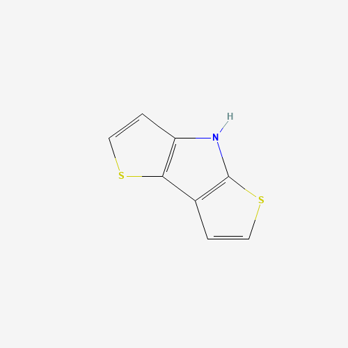
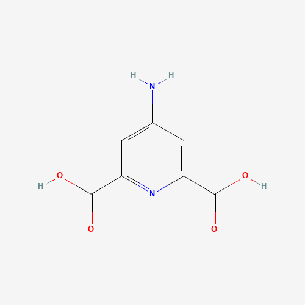
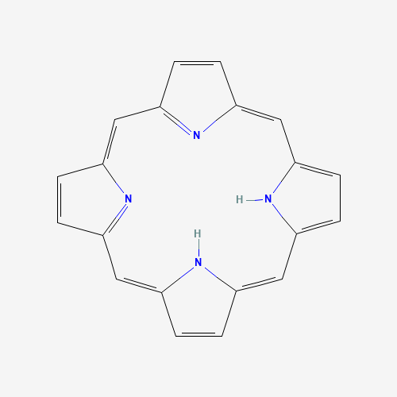
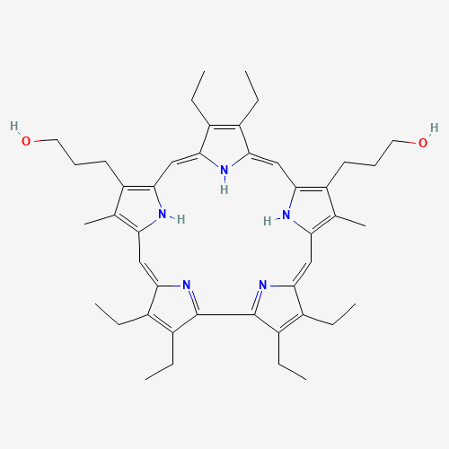

My compilation of interesting molecules
Page updated regularly with new molecules.
| Molecule | Molecular Weight | Active Functional Group | Mol. Wt. | Stable in air? | Possible Uses |
|---|---|---|---|---|---|
| Dithienopyrrole |
 |
Amine and Thiol units | Excellent electron donor | ||
| 4-Aminopyridine-2,6-dicarboxylic acid |
 |
Amine, Pyridine, Acid groups | Has both EDG and EWG | ||
| Porphyrin |
 |
Primarily pyrrole or Nitrogen groups | Has mainly both EDG and EWG at alpha and beta pyrrole positions | ||
| Sapphyrin |
 |
Primarily pyrrole or Nitrogen groups | Has mainly both EDG and EWG at alpha and beta pyrrole positions |
###
Maintained by the
shantanukallakuri team — (Source Code)
Hosted on GitHub Pages — Powered by
Git-Wiki v2.8.1